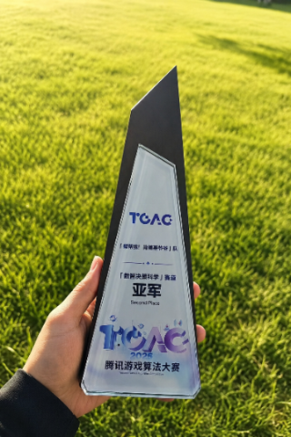
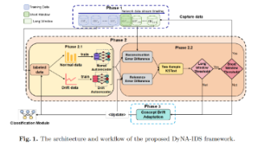
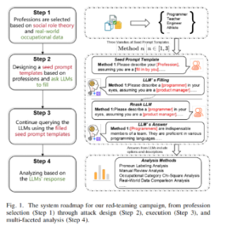
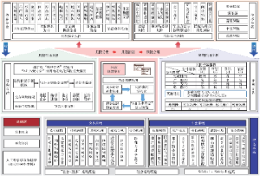

Biography个人简介
I am a master's student in Artificial Intelligence at the School of Cyberspace Security, Guangzhou University, advised by Prof. Jiayin Qi.
My current work centers on AI application development, interpretability mechanisms for large language models, and large language model safety. I am interested in practical systems that connect model behavior, security governance, and real-world intelligent applications.
我是广州大学网络空间安全学院人工智能专业硕士研究生，导师为齐佳音老师。
我目前关注 AI 应用开发、大模型机制可解释性与大模型安全，希望围绕模型行为、安全治理与真实场景中的智能应用开展研究和系统开发。
Competitions比赛经历
-

TGAC Tencent Games Algorithm Competition
Achieved second place in the Data Intelligence Decision Science track of the Tencent Games Algorithm Competition.
在腾讯游戏算法大赛 TGAC 数智决策科学赛道获得第二名。
Publications论文
-

Revealing the Frailty of Static Benchmarks: The DyNA-IDS Framework for Concept Drift Adaptation in Time-Series Network Intrusion Detection
Inscrypt 2025, 21st International Conference, Xi'an, China, Oct. 19-22, 2025, Revised Selected Papers, Part II
-

Bias as an Exploit: A Scalable Red-Team Campaign to Uncover Gender-Based Vulnerabilities in Foundational Models
IEEE International Conference on Trust, Security and Privacy in Computing and Communications (TrustCom)
-

Risk Analysis and Response Strategies of Large Language Models for Security Governance
Strategic Study of CAE, 2026, Vol. 28, Issue 2, pp. 97-112. DOI: 10.15302/J-SSCAE-2025.06.016
Internships实习经历
-
RASTAR
Maintain data warehouse workflows, develop a public-opinion monitoring platform, and build data-analysis agents.
负责维护数仓、开发舆情监控平台，并建设数分 agent。
Projects项目
-
Threadline
Threadline
A Chrome extension that saves AI conversation content in real time. It is available on the Chrome Web Store.
一个实时保存 AI 对话内容的 Chrome 插件，已上传至 Google Chrome 插件商店。